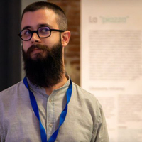

← People

CI² · RAISE
Niccolò Covoni
Coordinator, CI²
Sophia University Institute
Niccolò Covoni is a researcher at the Sophia University Institute and coordinates CI², the Research Unit on Complexity and Information. He is also a member of the RAISE Research Unit.
CI² investigates the epistemic and ontological status of information and complexity as cross-cutting concepts, bringing together philosophy of science, physics, computer science and complexity studies in order to connect different domains of knowledge through shared conceptual foundations.